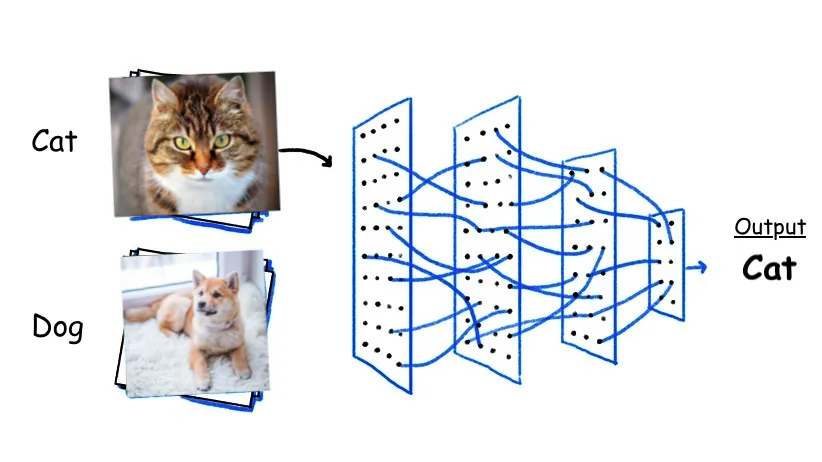
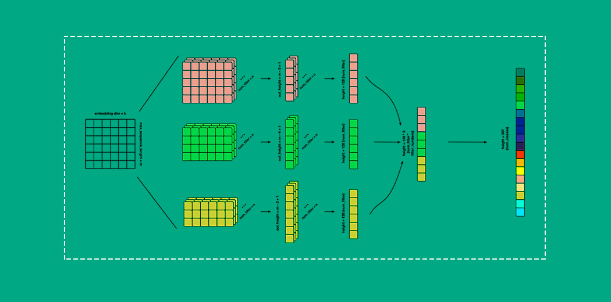

How to Use the RecycleScan AI Tool

How does it work?
Convolutional neural networks (CNNs) - like pictured above - assign labels to images. These labels are often called the "class" of the image. The RecycleScan AI model is an example of a CNN. Our model classifies items of waste and delivers relevant disposal guidelines.
Crucially, CNNs rely HEAVILY on their training data. The RecycleScan model is trained on images in the following classes: metal, paper, cardboard, glass, plastic, e-waste, glass. We are constantly updating our dataset (and the classes we use), to improve the model.
Tips & Tricks
To maximize the accuracy of the model, is crucial that users take high quality images when using the tool. When taking images, position your item near the center of the image. Make sure the item is large within the image, and not too far away from the camera.
Furthermore, ensure that the background is relatively clear and plain. The model is more likely to classify the object correctly if there aren't other objects in the background. Avoid using the selfie camera to take your images - flip the camera around and find a simple and clear background.

In many cases, you may simply need to try again to get the correct result. If you cannot do this after ~3 attempts, then resort to the how-to page.
Furthermore, the model will NOT classify everything correctly. That is ok. Please use our "how-to" pages to clear up any confusion.
Feedback
Please use our reporting system to tell us when the model makes a mistake. This helps us improve the model over time so that YOU can have a better experience wiith our app.